GP AUSTRALIA (Albert Park)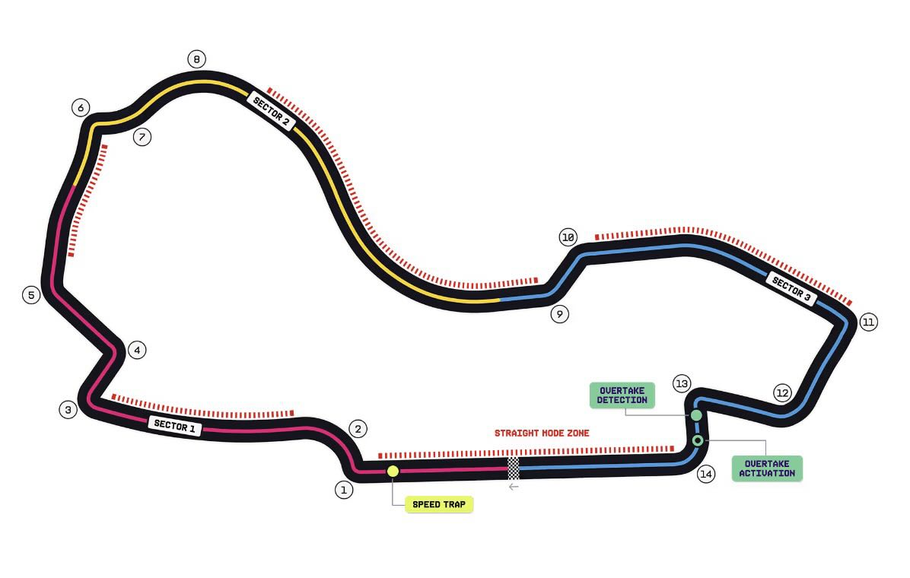

Giro veloce: Lando Norris su McLaren nel 2025, con il tempo di 1:15.096
Risultato gara: 1° M.Verstappen, 2° L.Norris, 3° G.Russel
GP CINA (Shanghai)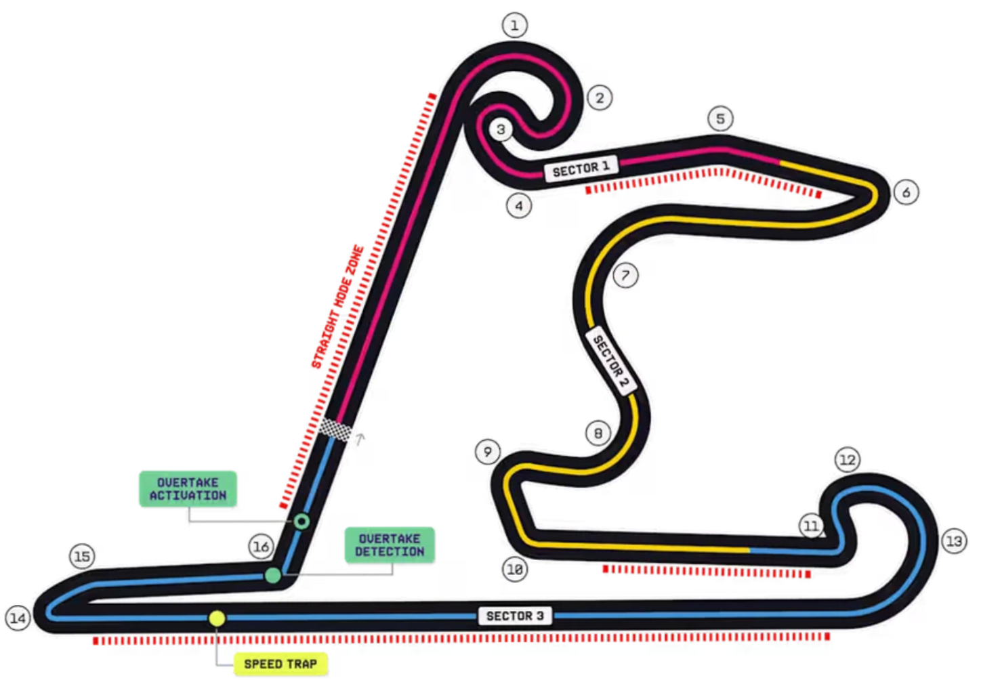

Giro veloce: Oscar Piastri su McLaren nel 2025, con il tempo di 1:30.641
Risultato Sprint: 1°M. Verstappen, 2° L. Norris, 3° C. Leclerc
Risultato gara: 1° O.PIASTRI, 2° L. Norris, 3° G. Russel
GP GIAPPONE (Suzuka)
Giro veloce: Max Verstappen su Red Bull nel 2025, con il tempo di 1:26.983
Risultato gara: 1° M. Verstappen, 2° L. Norris, 3° O. Piastri
GP BAHRAIN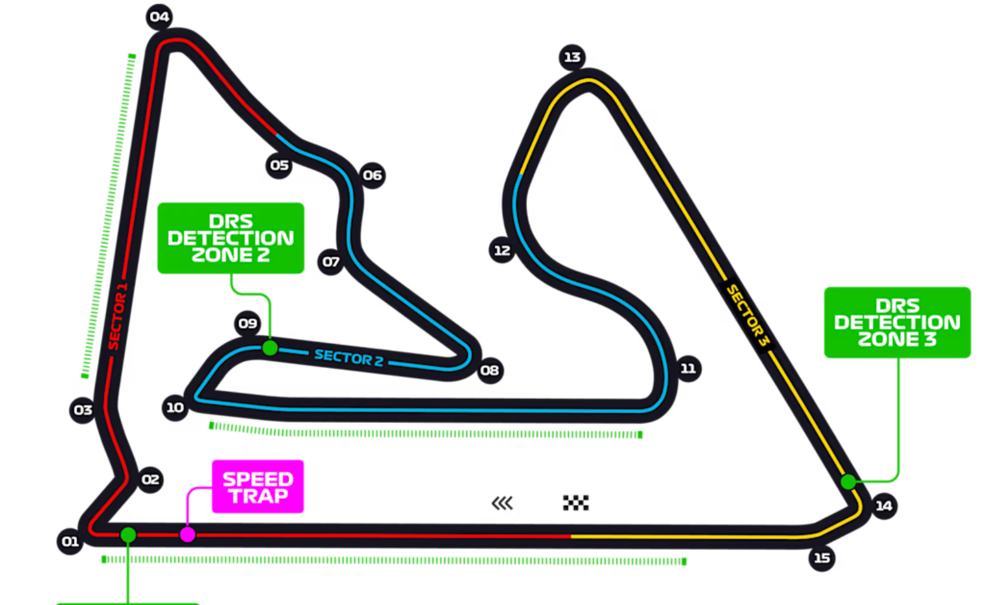

Giro veloce: Lewis Hamilton su Mercedes nel 2020, con il tempo di 1:27.264
Risultato gara: 1° O. Piastri, 2° G. Russel, 3° L. Norris
GP ARABIA SAUDITA (Jeddah)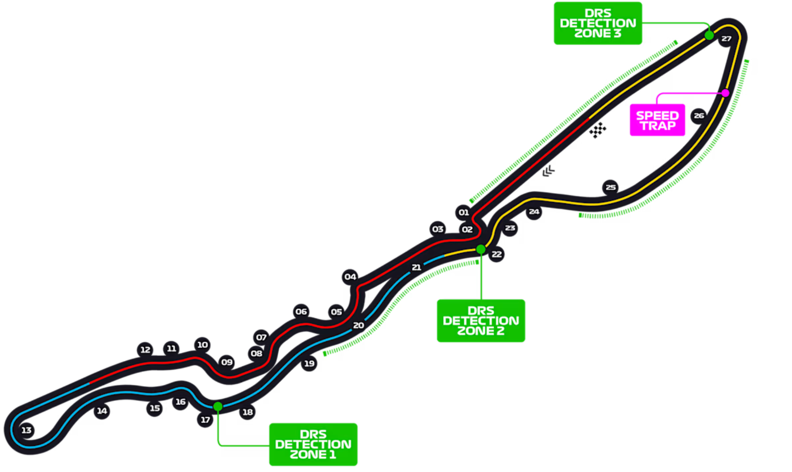

Giro veloce: Max Verstappen su Red Bull nel 2025, con il tempo di 1:27.294
Risultato gara: 1° O. Piastri, 2° M. Verstappen, 3° C. Leclerc
GP MIAMI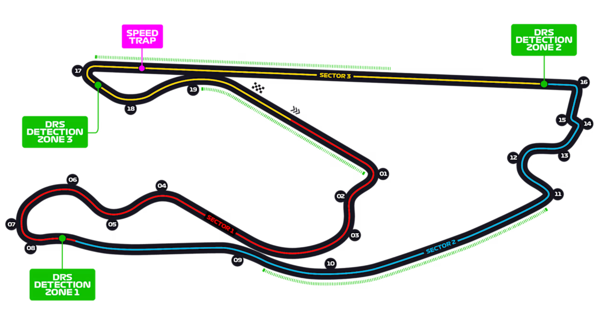

Giro veloce: Max Verstappen su Red Bull nel 2025, con il tempo di 1:26.204
Risultato Sprint: 1° L. Norris, 2° M. Verstappen, 3° O. Piastri
Risultato gara: O. Piastri, 2° L. Norris, 3° G. Russel
GP ITALIA(Imola)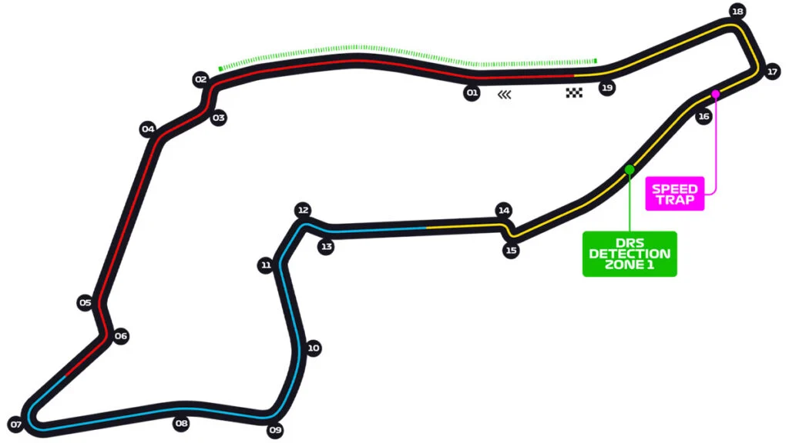

Giro veloce: Valtteri Bottas su Mercedes nel 2020, con il tempo di 1:13.609
Risultato gara: 1° M. Verstappen, 2° L. Norris, 3° O. Piastri
GP MONACO (Monte Carlo)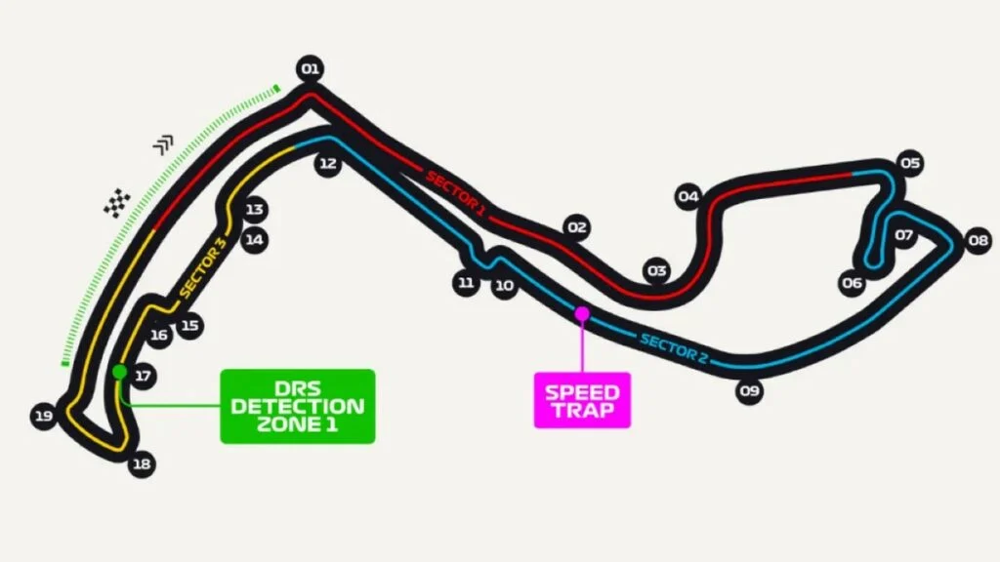

Giro veloce: Lando Norris su McLaren nel 2025, con il tempo di 1:09.954
Risultato gara: 1° L. Norris, 2° C. Leclerc, 3° O. Piastri
GP SPAGNA (Barcelona-Catalunya)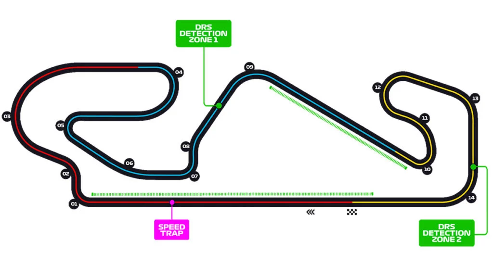

Giro veloce: Lando Norris su McLaren nel 2024, con il tempo di 1:11.383
Risultato gara: 1° O. Piastri, 2° L. Norris, 3° C. Leclerc
GP CANADA (Gilles-Villeneuve)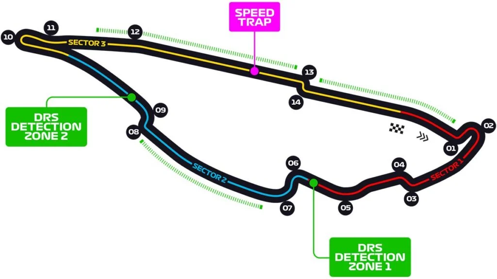

Giro veloce: Sebastian Vettel su Ferrari nel 2019, con il tempo di 1:10.240
Risultato gara: 1° G. Russell, 2° M. Verstappen, 3° K. Antonelli
GP AUSTRIA (Spielberg)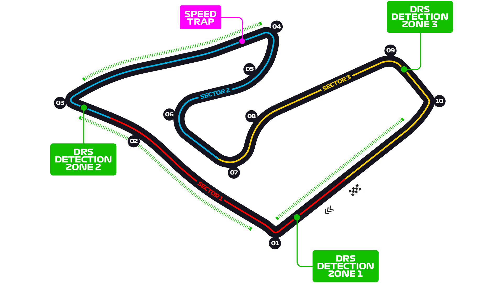

Giro veloce: Valtteri Bottas su Mercedes nel 2020, con il tempo di 1:02.939
Risultato Sprint: 1° M. Verstappen, 2° O. Piastri, 3° L. Hamilton
Risultato gara: 1° L. Norris, 2° O. Piastri, 3° C. Leclerc
GP REGNO UNITO (Silverstone)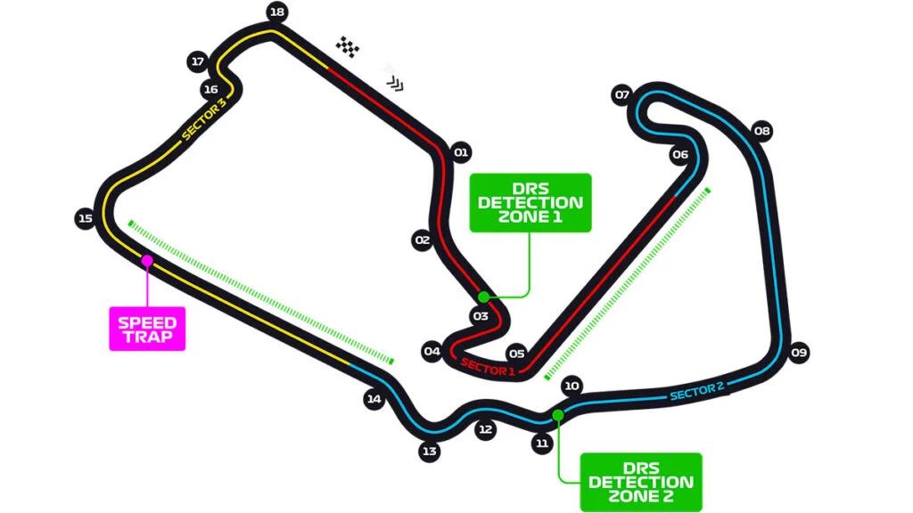

Giro veloce: Lewis Hamilton su Mercedes nel 2020, con il tempo di 1:24.303
Risultato gara: 1° L. Norris, 2° O. Piastri, 3° N. Hulkenberg
GP BELGIO (Spa-francorchamps)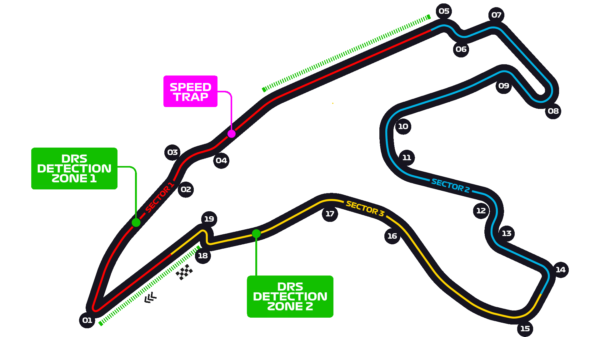

Giro veloce: Oscar Piastri su McLaren nel 2025, con il tempo di 1:40.510
Risultato gara: 1° O. Piastri, 2° L. Norris, 3° C. Leclerc
GP UNGHERIA (Hungaroring)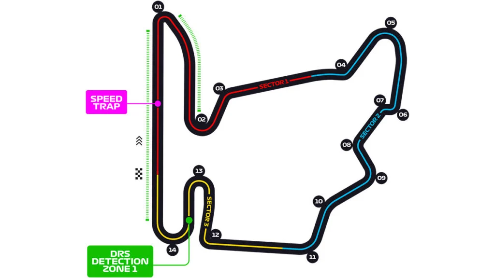

Giro veloce: Lewis Hamilton su Mercedes nel 2020, con il tempo di 1:13.447
Risultato gara: 1° L. Norris, 2° O. Piastri, 3° G. Russell
GP OLANDA (Zandvoort)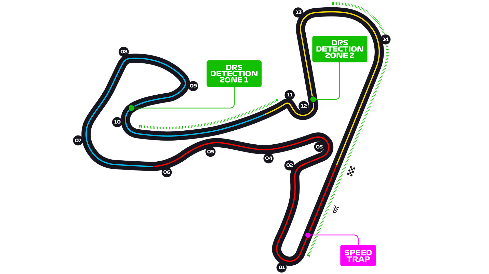

Giro veloce: Oscar Piastri su McLaren nel 2025, con il tempo di 1:08.662
Risultato gara: 1° O. Piastri, 2° M. Verstappen, 3° I. Hadjar
GP ITALIA (Monza)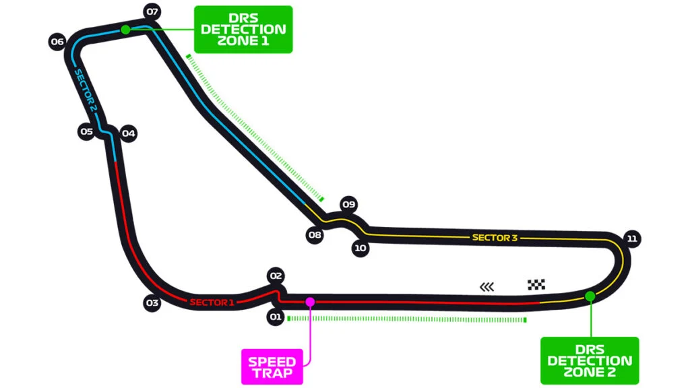

Giro veloce: Max Verstappen su Red Bull nel 2025, con il tempo di 1:18.792
Risultato gara: 1° M. Verstappen, 2° L. Norris, 3° O. Piastri
GP AZERBAIGIAN (Baku)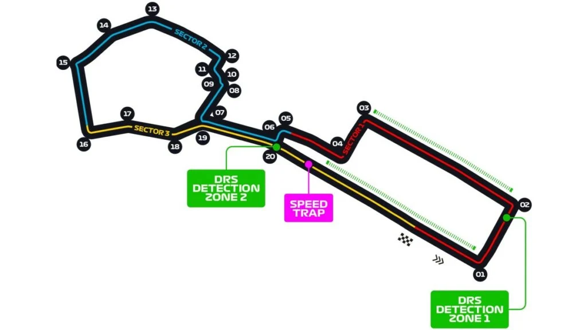

Giro veloce: Charles Leclerc su Ferrari nel 2023, con il tempo di 1:40.203
Risultato gara: 1° M. Verstappen, 2° G. Russell, 3° C. Sainz
GP SINGAPORE (Marina Bay)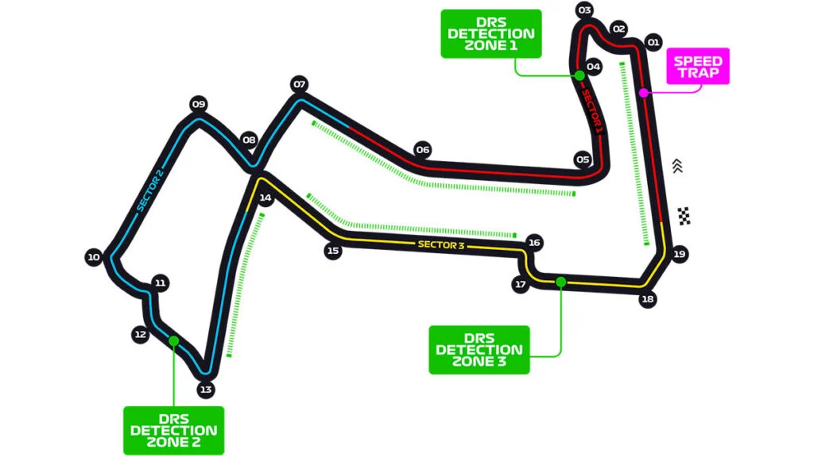

Giro veloce: Lando Norris su McLaren nel 2024, con il tempo di 1:29.525
Risultato gara: 1° G. Russell, 2° M. Verstappen, 3° L. Norris
GP STATI UNITI (Austin)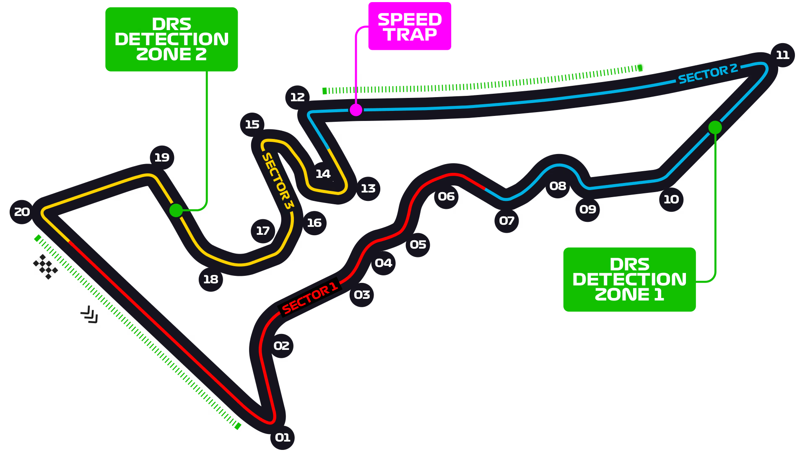

Giro veloce: Lewis Hamilton su Mercedes nel 2018, con il tempo di 1:32.237
Risultato Sprint: 1° C. Leclerc, 2° M. Verstappen 3° L. Norris
Risultato gara: 1° M. Verstappen, 2° L. Norris, 3° C. Leclerc
GP CITTÀ DEL MESSICO (Hermanos Rodríguez)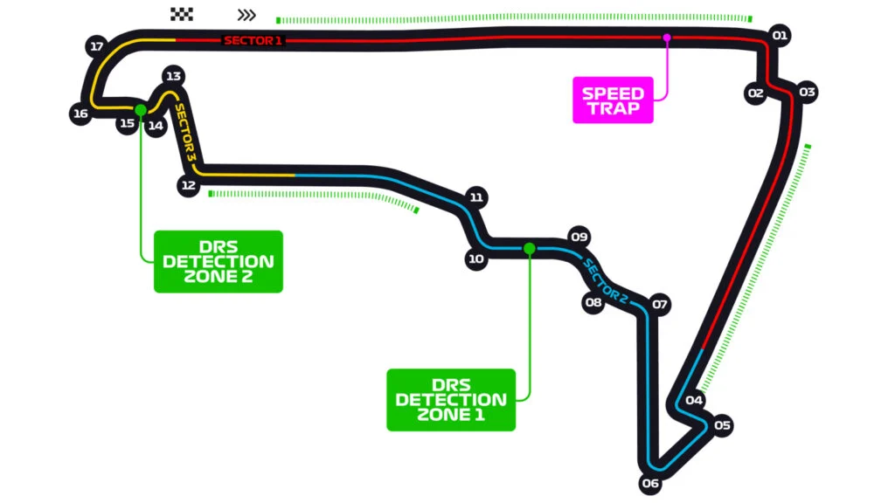

Giro veloce: Max Verstappen su Red Bull nel 2019, con il tempo di 1:14.758
Risultato gara: 1° L. Norris, 2° C. Leclerc, 3° M. Verstappen
GP BRASILE (Interlagos)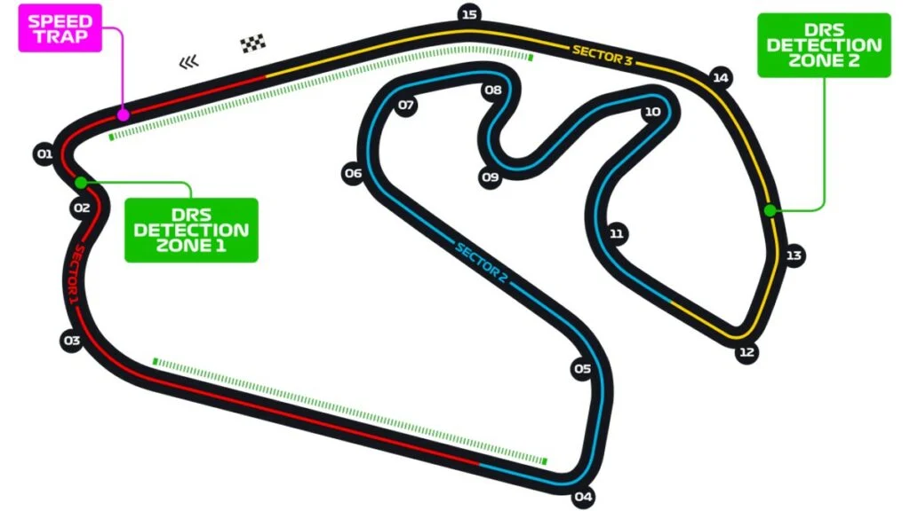

Giro veloce: Lewis Hamilton su Mercedes nel 2018, con il tempo di 1:07.281
Risultato Sprint: 1° O. Piastri, 2° L. Norris, 3° M. Verstappen
Risultato gara: 1° L. Norris, 2° K. Antonelli, 3° M. Verstappen
GP LAS VEGAS (Caesars Palace)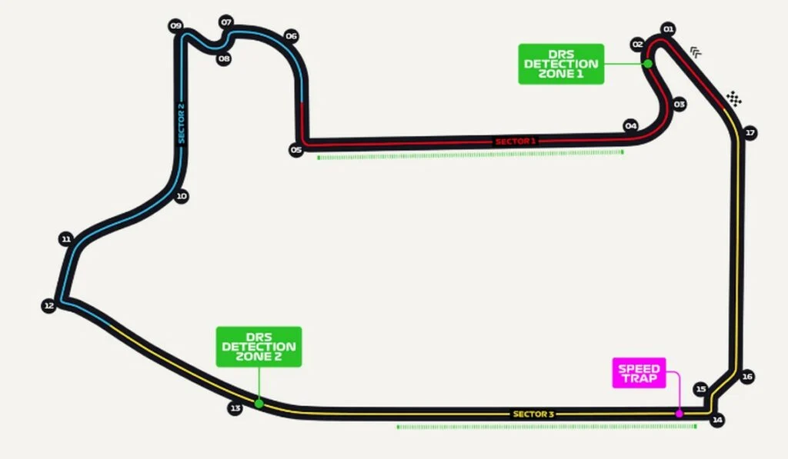

Giro veloce: George Russell su Mercedes nel 2024, con il tempo di 1:32.312
Risultato gara: 1° M. Verstappen, 2° G. Russell, 3° K. Antonelli
GP QATAR (Lusail)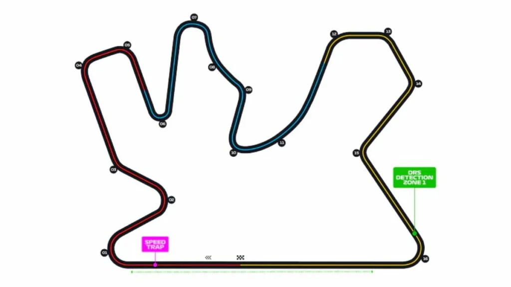

Giro veloce: Oscar Piastri su McLaren nel 2025, con il tempo di 1:19.387
Risultato Sprint: 1° M. Verstappen, 2° L. Norris, 3° G. Russell
Risultato gara: 1° M. Verstappen, 2° O. Piastri, 3° C. Sainz
GP ABU DHABI (Yas Marina)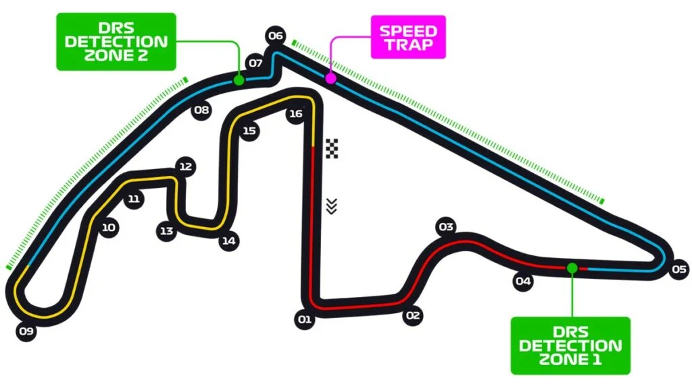
